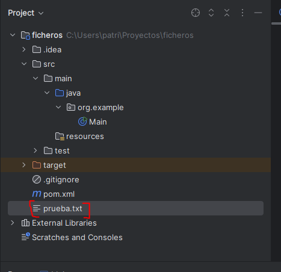
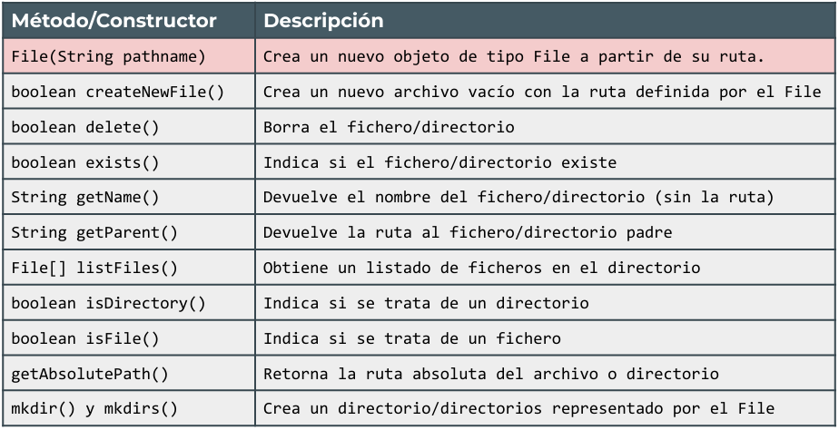
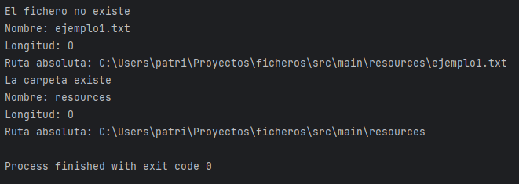

La clase File no se utiliza para leer o escribir datos en sí, sino para acceder a la información del archivo o directorio, como la ruta, tamaño, atributos, permisos, etc.
public class Main {
public static void main(String[] args) {
File archivo = new File("prueba.txt"); // archivo es una referencia a un objeto de tipo File.
//No crea físicamente el archivo prueba.txt aún, sólo representa una ruta (relativa o absoluta) en el sistema de archivos.
try {
if (archivo.createNewFile()) {
System.out.println("Archivo creado: " + archivo.getName());
} else {
System.out.println("El archivo " + archivo.getName() + " ya existe.");
}
} catch (IOException e) {
System.out.println("Ha habido algún problema.");
e.printStackTrace();
}
}
}
Como nos interesa saber qué ha ocurrido si se ha producido un error, en lugar de e.getMessage() usaremos e.printStackTrace() que nos proporciona información sobre el tipo de excepción y la pila de llamadas (stack trace), es decir, el error que ha ocurrido en el código, línea por línea.
Por defecto, si no indicamos ruta, nos creará el archivo colgando de la carpeta principal del proyecto:

ACTIVIDAD 1. Modifica el programa para que los archivos se creen en la carpeta src/main/resources/ a partir de ahora.

File fichero = new File("src/main/resources/ejemplo1.txt");
if(fichero.exists()) System.out.println("El fichero " + fichero.getName() + " existe");
else System.out.println("El fichero " + fichero.getName() + " no existe");
System.out.println("Nombre: " + fichero.getName());
System.out.println("Longitud: " + fichero.length());
System.out.println("Ruta absoluta: " + fichero.getAbsolutePath());
// ejemplo carpeta
File carpeta = new File("src/main/resources");
if(carpeta.exists()) System.out.println("La carpeta " + carpeta.getName() + " existe");
else System.out.println("La carpeta " + carpeta.getName() + " no existe");
System.out.println("Nombre: " + carpeta.getName());
System.out.println("Longitud: " + carpeta.length());
System.out.println("Ruta absoluta: " + carpeta.getAbsolutePath());
ACTIVIDAD 2. Añade lógica al ejemplo anterior para que se cree el fichero "ejemplo1.txt" y observa que cambia la salida porque ahora lo encuentra.
ACTIVIDAD 3. Abre el fichero manualmente, escribe algo y vuelve a ejecutar tu programa. Observa que haya cambiado la longitud según el número de caracteres que hayas escrito.
Crear y borrar ficheros y carpetas
File archivo = new File("nuevoArchivo.txt");
try {
if (archivo.createNewFile()) System.out.println("Archivo creado");
else System.out.println("El archivo ya existe");
} catch (IOException e) { e.printStackTrace(); }
File directorio = new File("nuevoDirectorio");
if (directorio.mkdir()) System.out.println("Directorio creado");
else System.out.println("No se pudo crear el directorio");
File archivoBorrar = new File("archivoParaEliminar.txt");
if (archivoBorrar.delete()) System.out.println("Archivo eliminado");
else System.out.println("No se pudo eliminar el archivo");ACTIVIDAD 4. Crea un método que debe generar ‘n’ archivos: nombre(1).txt, nombre(2).txt,... nombre(n).txt en la carpeta que se solicite al usuario por pantalla.
Listar archivos de un directorio
- Sólo nombre (String):
File directorio2 = new File(".");
String[] archivos = directorio2.list();
if (archivos != null && archivos.length > 0){
for (String a : archivos){
System.out.println(a);
}
}else{
System.out.println("No hay archivos en la carpeta");
}- Nombre y + info (File):
public static void main(String[] args) {
String rutaCarpeta = ".";
listarArchivos(rutaCarpeta);
}
// método que lista todos los archivos de un carpeta, indicando el tamaño en bytes
public static void listarArchivos(String rutaCarpeta) {
File carpeta = new File(rutaCarpeta);
if (carpeta.isDirectory()) {
File[] archivos = carpeta.listFiles();
if (archivos != null && archivos.length > 0) {
for (File f : archivos) {
if (f.isFile()) {
System.out.println(f.getName() + " - " + f.length() + "bytes");
}
}
}else{
System.out.println("No se ha encontrado ningún archivo.");
}
} else System.err.println("La ruta proporcionada no es una carpeta");
}ACTIVIDAD 5. Crea un método que reciba una carpeta y liste el contenido de dicha carpeta de aquellos archivos cuya extensión sea .txt. Crea una sobrecarga para que el método pueda recibir también el tipo de archivo a listar (.pdf, .jpg, etc,...).